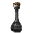
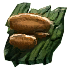
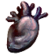

Средняя Фляга Уничтожения
Предметы / Фляги и зелья
Открыть в интерактивной вики →
| Вес | 1 |
|---|---|
| Цена | 2 500 |
Описание
Бутылка содержит специальное вещество, способное улучшить снаряжение IV - VI рангов. Процесс требует дополнительного Ингибитора.
Общий вес итемов на 1хСредняя Фляга Уничтожения: 76
Общий вес итемов на 1х
Средняя Фляга Уничтожения: 76| Бутылка с особым веществом, способным улучшить снаряжение ранга IV–VI. Процесс дополнительно требует ингибитора. |
Рецепт
Создание: 1x

Малая Фляга Уничтожения + 3x
Траметес + 3x
Сердце павшего рыцаря + 1kГде создать
Изготовление
Изготавливает Вила в Южном Аларилe за 1 000 золота после доставки ингредиентов:
|